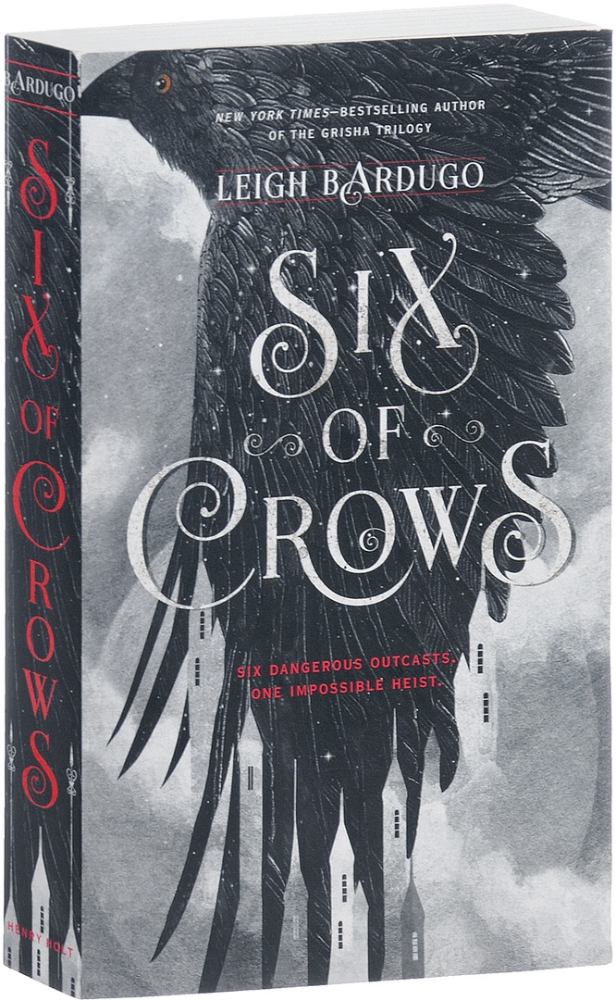

КНИГА «Six of crows»
«Six of crows»(«Шестёрка воронов») - это фантастический роман, написанный американской писательницей Ли Бардуго, опубликованный Генри Холтом и компанией в 2015 году. Сюжет повествует о воровской бригаде и в основном разворачивается в городе Кеттердам, по мотивам голландской республики - эры Амстердам . Сюжет рассказывается от третьего лица семью разными персонажами. За этим романом следует «Crooked Kingdom» («Продажное королевство»), оба они являются частью Гришавселенной.
Краткое содержание первой части: В Ketterdam, столице островного государства Керчи, член совета Hoede тестирует препарат летальной для человека и привыкание к Гриша называется jurda Parem на Гришу Целителя. Наркотик усиливает ее способности больше, чем ожидалось, позволяя ей слишком легко управлять человеческим разумом и манипулировать им. Она убегает после того, как парализует Ходе и нескольких охранников, но через несколько дней ее находят мертвой. Богатый торговец Ян Ван Эк рассказывает о результатах эксперимента Ходе 17-летнему криминальному вундеркинду Казу Бреккеру и поручает ему спасти своего изобретателя Бо Юл-Байура из Ледяного двора, военного опорного пункта в Фьерде, в который прежде никогда не проникали; и предотвратить распространение наркотиков в мире. Каз соглашается на изрядную сумму и начинает набирать команду: Инеж Гхафа, его правая шпионка, которую он спас из дома удовольствий под названием Зверинец двумя годами ранее; Нина Зеник, Гриша Heartrender, которая присоединяется, узнав о своем намерении освободить и нанять Матиаса Хелвара, бывшего Fjerdan drüskelle или охотника за Гришами, содержащегося в тюрьме Хеллгейт из-за Нины; и Джеспер Фэйи, снайпер из Земени, увлекающийся азартными играми. Вместе они вырывают из тюрьмы Матиаса, который соглашается помочь в обмен на помилование, которое позволит ему восстановиться в качестве дрюскеля . Каз также привлекает Уилана Ван Экка, беглого сына Яна Ван Экка, в качестве эксперта по сносу домов и может оказать влияние, если Ван Эк откажется от своей сделки. Когда они собираются отплыть из Кеттердама, команда отразила засаду конкурирующих банд; После пыток гангстера Каз узнает, что лидер банды Пекка Роллинз, человек, ответственный за смерть своего брата Джорди, также преследует ученого. Каз объясняет свой план спасения команде, где они войдут в Ледяной двор в качестве заключенных, перейдут в сектор посольства через крышу и переоденутся иностранными сановниками во время фестиваля. Найдя и освободив Юл-Баюр с Белого острова, внутреннего кольца, они выйдут из сектора посольства. Достигнув Фьерды, на группу нападают два гриша на джурда парем с символом правительства Шу. Команда преобладает, но Нина узнает в одном из нападавших своего старого друга, который только умоляет дать еще наркотика, прежде чем погибнуть от его ран. Обеспокоенная их смертью и веря, что они выжили бы, если бы они не были сильно ослаблены наркотиками, Нина остается, чтобы похоронить их. Матиас помогает, позволяя им наконец поговорить о ее предательстве. Нина была солдатом-гришем из 2-й армии Равкана, захваченным Матиасом со своим отрядом Fjerdan drüskelle и отправленным на корабль в Фьерду для суда и, в конечном итоге, казни. Корабль затонул во время шторма, и выжили только Матиас и Нина; они полюбили друг друга, помогая друг другу обрести цивилизацию. Когда они приехали в город, шпионы Гриши расспросили Нину о ее спутнице- дрюскелле . Чтобы спасти Матиаса от своих соотечественников, Нина сообщила о нем как о работорговце гражданину Керчи в гавани, не зная, что Матиас будет заключен в тюрьму в Хеллгейт сразу после того, как достигнет Кеттердама. Вместо того чтобы вернуться к Равке, Нина осталась в Кеттердаме, чтобы попытаться освободить его. Матиас примиряется с Ниной, узнав правду, и решает помочь убить Юл-Байура, оба признают, что юрда парем представляет угрозу как для Гриши, так и для Фьердана. Экипаж перехватывает телегу с пленными, которую везут в Ледовый двор, и занимает место шестерых из них. Каз теряет сознание из-за клаустрофобии, и его прошлое раскрывается. После того, как он и его брат были обмануты Пеккой Роллинзом, чума охватила Кеттердам, убив многих его жителей, включая Джорди. Каз заболел и выздоровел, но его ошибочно сочли мертвым и бросили в Баржу Жнеца вместе с телами для сожжения. Он смог выжить, только доплыв до берега, используя труп своего брата в качестве буйка. Этот опыт вызвал сильное отвращение к любому физическому контакту с кожей человека, что побудило его постоянно носить перчатки. Он просыпается, когда они входят в Ледяной двор. Экипаж разделен: мужчин и женщин разводят в разные палаты. Джеспер, который, как выяснилось, является фабрикатором Гриши, вытаскивает отмычки из решеток камеры. Каз освобождает Нину и Инеж из их камер, в то время как Матиас и Джеспер собирают столько веревки, сколько могут найти. Каз идет с Ниной, чтобы обыскать другие камеры содержания Юл-Байура, и, разделившись, Каз отклоняется от плана и находит Пекку Роллинза в камере. Нину замечают охранники, которым удается поднять тревогу, прежде чем она успевает убить их. Она спешит в подвал, где Инеж подняла шестиэтажную шахту мусоросжигательного завода на крышу, обеспечивая путь к эвакуации для остальной команды. Когда сработала тюремная тревога, их план был разрушен, поэтому они импровизировали, чтобы добраться до центра Ледового двора. Иней и Нина входят, заняв место двух девушек из зверинца, но только Нина проходит через охрану; Инеж сдерживается. Матиас и Каз проходят через секретный мост, известный только Дрюскелле . Джеспер и Уилан движутся, чтобы разрушить ворота кольцевой стены и вызвать тревогу Ледового двора. Пытаясь получить информацию от чиновника Фьердана, Нина удивляется, увидев Ярла Брума, командира корабля, на котором она была в плену. Брам заманивает Нину в тюремные камеры, специально построенные для задержания Гриши, и запирает ее в камере. Появляется Матиас, который, кажется, предал ее, но поворачивается против своего старого командира и освобождает Нину, дав священный обет дрюскелле, чтобы защитить ее, пока он не умрет. Ищут Бо Юл-Байура, но узнают о его смерти. Его сын, Кувэй Юл-Бо, жив и вынужден повторить исследования своего отца. Матиас и Нина отказываются убивать его, так как ему всего пятнадцать и он Гриша. Они забирают мальчика и уходят, взрывая лабораторию на своем пути. Они встречаются с Казом и сбегают через водопад, обнаруженный Казом после уничтожения дерева в центре Белого Острова. Тем временем Инеж замечает лидер Зверинца, ее бывший работодатель Хелен ван Хоуден, которая сообщает охранникам настоящую личность Инеж. Джеспер и Уилан спасают ее, угоняют танк «Фьердан» и используют его, чтобы протаранить стены и сбежать, в конечном итоге воссоединившись со своими союзниками и выйдя за пределы Ледяного двора. Они направляются к доку, где должны встретиться со своим кораблем, но обнаруживают, что их ждет большая группа фьерданов, Heartrender, использующий парем на передовой . Не имея другого выбора, Нина берет юрда парем и подчиняет армию. Брам и команда дрюскелле прибывают, но прежде чем она успевает убить их, вмешивается Матиас и умоляет ее позволить им жить, поэтому Нина смягчается. Экипаж благополучно достигает Кеттердама, а Нина уже страдает от отказа. Они оставляют ее с Уиланом, а остальные отвозят Кувея к Яну Ван Экку. Ван Эк, однако, показывает, что он только хотел, чтобы формула jurda parem извлекла выгоду из последствий ее распространения в мире. Он топит корабль команды, несмотря на предупреждение Каза, что Уилан на борту. Ван Эк считает своего сына неспособным унаследовать его бизнес-империю, поскольку Уилан неграмотен. Каз, однако, показывает, что мальчик, которого Ван Эк считает Кувей Юл-Бо, на самом деле является Уиланом, созданным Ниной так, чтобы он выглядел в точности как сын ученого. Разъяренный Ван Эк похищает Инеж с помощью Гриши под влиянием юрда парем и дает им семь дней, чтобы принести ему настоящего Кувей. Не желая подвергать Инеж опасности опасности, Каз отпускает торговца. Каз и его оставшаяся команда отправляются к Пекке Роллинзу, который, как выяснилось, был освобожден Казом в Ледовом дворе, теперь снова в Кеттердаме. Каз продает свои доли в Кроу-клубе и Пятой гавани, чтобы собрать необходимые ему деньги. Затем он вынашивает план по спасению Инеж и выкупу обещанных им денег.
<<Вернуться на главную>>